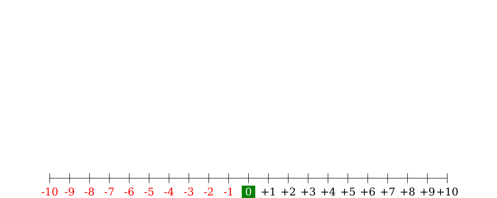
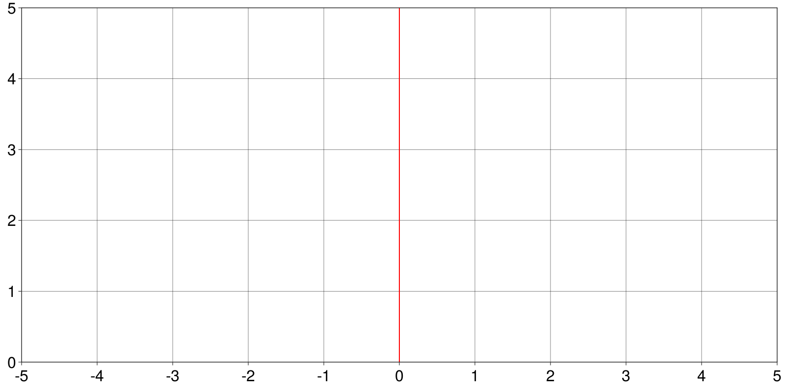

TheNumberLine.jl
The Number Line is a common teaching tool in e.g. K-12 math classes accross the U.S.
Authors: Gael Forget and Jane Chapin

This package is in early development stage when breaking changes are to be expected.
Use Example
In your web-browser (see User Directions for detail) :
- type a number in the text box
- click on the
addbutton - repeat or reset
Repeat a few times, e.g. with other numbers, to obtain something like the image shown below on the right hand side. You can also hit start over at any point (left hand side image).
| Start | Add |
|---|---|
 |  |
Exercises
Random Turtle
In the random turtle activity we take a series of N consecutive, random, steps on the number line. Each step is either -1 (left) or +1 (right) based on a coin flip. We do this N times in a row (10 times for example) and observe our final value at the end (green arrow). All you need to do this is copy the following line to a new code cell and run it:
NumberLinePlot(rand((-1,1),10))
The activity basically is do this a bunch of times and discuss how results can vary .
Histograms
This module provides a simple way to create an empty histogram that students can print and write over.
#using TheNumberLine
import TheNumberLine.histogram_template: make_hist, save_hist
fig=make_hist()
save_hist(fig,file="hist.png")"hist.png"
Various
1. Use a Slider
In the first code cell of standard_number_line.jl, where values are entered, you can use a list of a slider or multiple choice instead.
To do this, replace the line that says
` Type value : ` $(@bind b html"<input type=text>")with
`Select value of x from the list : ` $(@bind b Select(["4","3","2","1","0","-1","-2","-3","-4"],default="0"))or
`Choose value of x using slider : ` $(@bind b aSlider(-10:10; default=0))2. Integers Only
To restrict the number line to using integers (as opposed to reals), try changing TestType in standard_number_line.jl.
To do this, replace the line that says
TestType=Number; NumberLineType=Float64; "Number LineType = $(NumberLineType)"with
TestType=Int; NumberLineType=Int; "NumberLineType = $(NumberLineType)"Main Functions
TheNumberLine.NumberLinePlot — FunctionNumberLinePlot(x)Display the number line sequence of operations, defined by vector x, as a graph.
TheNumberLine.NumberLineExpression — FunctionNumberLineExpression(x)Display the number line sequence of operations, defined by vector x, as text.
TheNumberLine.histogram_template.make_hist — Functionmake_hist()using TheNumberLine
import TheNumberLine.histogram_template: make_hist, save_hist
fig=make_hist()
save_hist(fig)User Directions
You can try TheNumberLine.jl in the cloud without having to install anything.

If instead you want to use TheNumberLine.jl then proceed as follows.
- Download TheNumberLine.jl
- Open a terminal window go to the
TheNumberLine.jl/src/folder - Start Pluto.jl e.g. via
julia -e "using Pluto; Pluto.run()" - In web browser window, select and open
standard_number_line.jl
Some tips for new users are provided below.
- To use
TheNumberLine.jlon your own computer, you'll need to download Julia itself beforehand. - to close the session you want to go back to the terminal window and
Press Ctrl+C